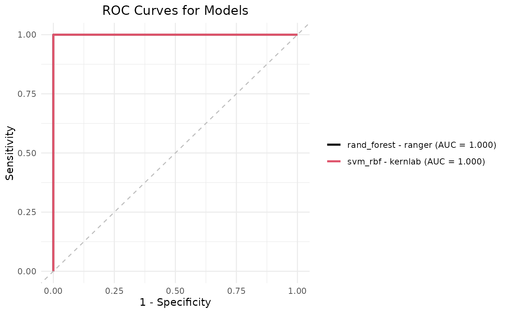
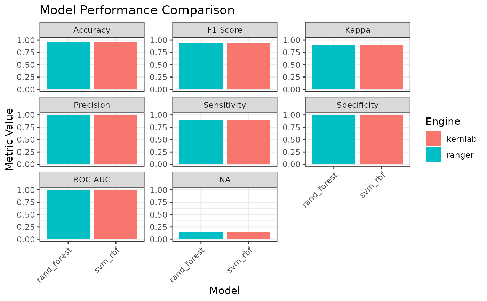
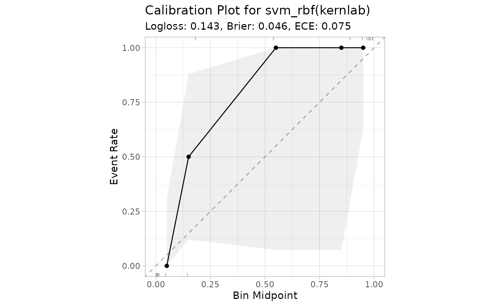
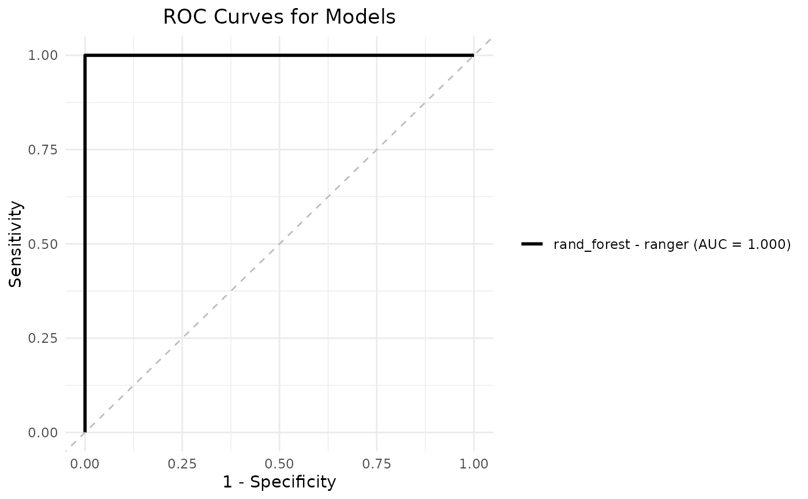
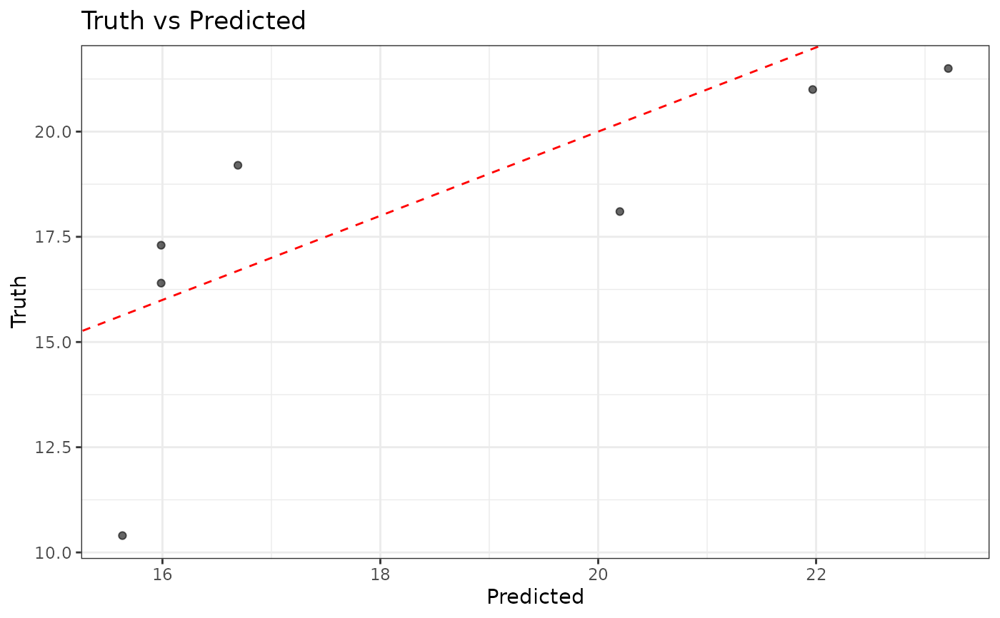
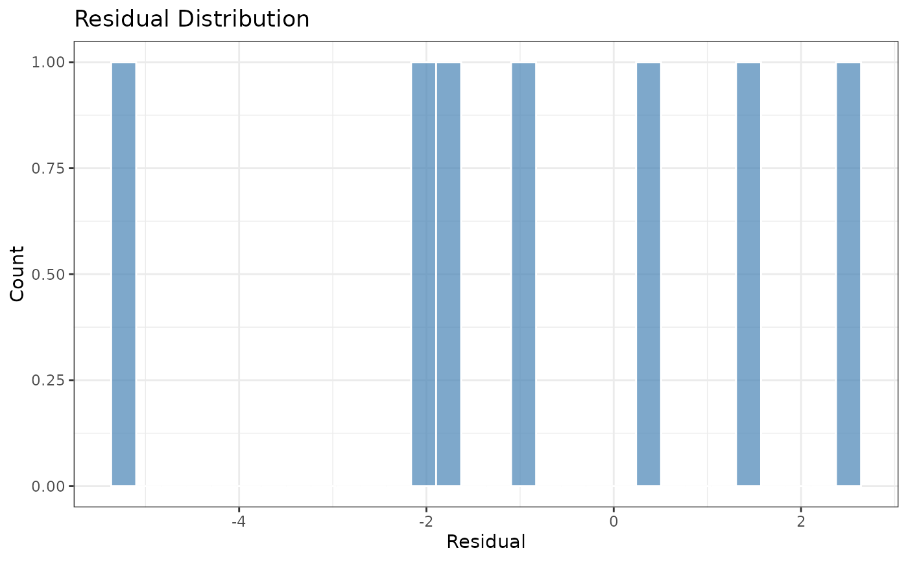

plot.fastml produces visual diagnostics for a trained fastml object.
Arguments
- x
A
fastmlobject (output offastml()).- algorithm
Character vector specifying which algorithm(s) to include when generating certain plots (e.g., ROC curves). Defaults to
"best".- type
Character vector indicating which plot(s) to produce. Options are:
"bar"Bar plot of performance metrics across all models/engines.
"roc"ROC curve(s) for binary classification models.
"calibration"Calibration plot for the best model(s).
"residual"Residual diagnostics for the best model.
"learning_curve"Learning-curve plot if recorded during training.
"all"Produce all available plots.
- ...
Additional arguments (currently unused).
Details
When type = "all", plot.fastml will produce a bar plot of metrics,
ROC curves (classification), calibration plot, and residual diagnostics (regression).
If you specify a subset of types, only those will be drawn.
Examples
# \donttest{
## Create a binary classification dataset from iris
data(iris)
iris <- iris[iris$Species != "setosa",]
iris$Species <- factor(iris$Species)
## Fit fastml model on binary classification task
model <- fastml(data = iris, label = "Species", algorithms = c("rand_forest", "svm_rbf"))
## 1. Plot all available diagnostics
plot(model, type = "all")


 #>
#> Residual diagnostics are only available for regression tasks.
#>
#>
#> No learning curve data available. Set `learning_curve = TRUE` when fitting to record it.
#>
## 2. Bar plot of performance metrics
plot(model, type = "bar")
#>
#> Residual diagnostics are only available for regression tasks.
#>
#>
#> No learning curve data available. Set `learning_curve = TRUE` when fitting to record it.
#>
## 2. Bar plot of performance metrics
plot(model, type = "bar")

## 3. ROC curves (only for classification models)
plot(model, type = "roc")
 ## 4. Calibration plot (requires 'probably' package)
plot(model, type = "calibration")
## 4. Calibration plot (requires 'probably' package)
plot(model, type = "calibration")

## 5. ROC curves for specific algorithm(s) only
plot(model, type = "roc", algorithm = "rand_forest")

## 6. Residual diagnostics (only available for regression tasks)
model <- fastml(data = mtcars, label = "mpg", algorithms = c("linear_reg", "xgboost"))
plot(model, type = "residual")
#>
#> Residual Diagnostics for Best Model:


# }